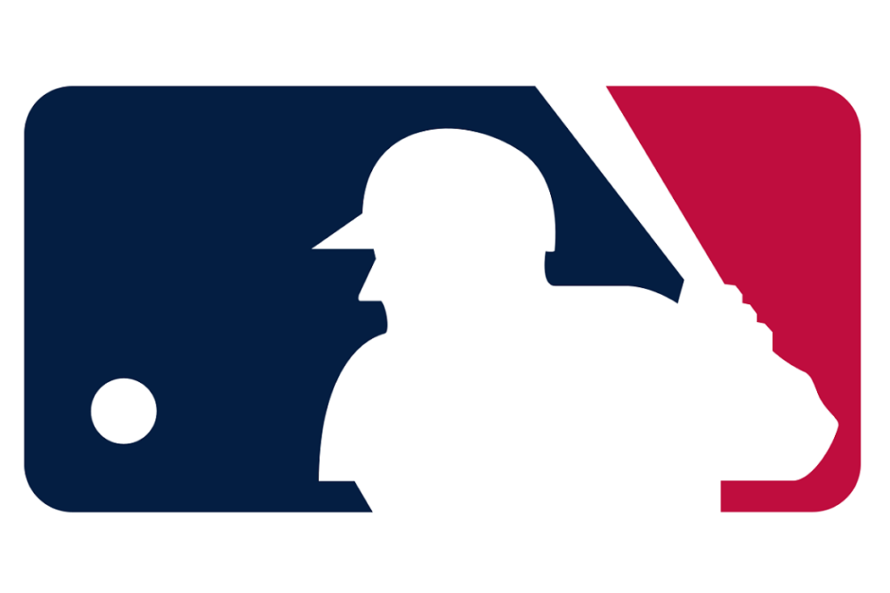

Beisbol
Historia
El béisbol, también llamado baseball o pelota base es considerado uno de los deportes más populares en México, Corea del Sur, Cuba, Curazao, Estados Unidos, Japón, Nicaragua, Países Bajos, Panamá, Puerto Rico, República Dominicana y Venezuela. Está claro que el béisbol moderno se desarrolló en Estados Unidos, aunque el origen exacto del juego es difícil de determinar. La mayoría de los estudios creen que el béisbol evolucionó desde una variedad de juegos similares. Una leyenda popular cuenta que Abner Doubleday, quien llegó a ser oficial del Ejército de la Unión durante la Guerra Civil estadounidense (1861-1865), inventó el béisbol en Cooperstown (Nueva York) en 1839.
Se juega en un gran campo cubierto completamente por césped natural o artificial, con excepción de una zona llamada línea del corredor, donde los jugadores de la ofensiva corren para alcanzar las bases ubicadas en los vértices del área cuadrangular llamada diamante, y anotar así como el área del lanzador, donde el terreno es una loma de tierra.
Varios equipos de las Grandes Ligas se trasladaron durante la década de 1950; el primero, los Boston Braves, se trasladaron a Milwaukee en 1953 y luego a Atlanta en 1967. Otros cambios clave ocurrieron en 1958, cuando los Brooklyn Dodgers se marcharon a Los Ángeles y los New York Giants se fueron a San Francisco y extendieron el mercado de las Ligas Mayores por todos los Estados Unidos. El béisbol profesional se hizo tan popular que muchas ciudades pidieron permiso para crear nuevos clubes, hasta llegar a los 30 equipos que conforman las Grandes Ligas en el presente.
|  |
|---|
| Logo Oficial de la Major League Baseball |
Reglas
Las reglas básicas del juego son relativamente sencillas, si bien hay algunas específicas para situaciones concretas. Básicamente trata de un equipo de bateadores/corredores que golpea o batea la bola o pelota de béisbol, de manera que esto les permita avanzar sobre las bases, hasta completar una carrera 'homerun' antes de que el equipo receptor tome la bola. Existen algunas jugadas específicas de cierta importancia como el "toque de sacrificio", en zonas de España occidental "toquecito" (golpe suave a la bola que hace que apenas avance). Y que tiene como objetivo hacer que los corredores que están en base se coloquen más cerca de anotar una carrera, pueden producir jugadas muy positivas de ataque para el equipo atacante. Si el "toque de sacrificio" o "toquecito" sale de la zona de juego cuando la cuenta del bateador lleva dos strikes este será tomado como un out por regla.
El lanzador dispone de cuatro posibles lanzamientos, que de resultar erróneos, permitirían al bateador avanzar a la primera base, mientras que el bateador (del otro equipo) dispone de tres intentos para batear (strike), antes de ser eliminado. Si el lanzador lanza mal la cuarta vez, el bateador consigue una base, sin necesidad de batear la bola. Mientras que si el bateador falla por tercera vez una bola buena o realiza un intento de bateo, queda eliminado ("ponchado"). Ese recuento de lanzamientos y bateos malos se denomina "cuenta". Si el bateador falla el tercer strike y el receptor pierde la bola y se le aleja, el bateador puede correr hacia la primera base, y si llega primero que el tiro del receptor, cuenta el ponche, pero no el out (esto ocurre solamente siempre y cuando la primera base esté desocupada).
Posiciones
Las posiciones de los jugadores en el terreno son las siguientes:
- Lanzador (Pitcher)
- Receptor (Catcher)
- Primera Base (First Baseman)
- Segunda Base (Second Baseman)
- Tercera Base (Third Baseman)
- Campocorto, parador en corto (Short Stop)
- Jardinero Izquierdo (Left Fielder)
- Jardinero Central (Center Fielder)
- Jardinero Derecho (Right Fielder)
- Bateador Designado (Designated Hitter)